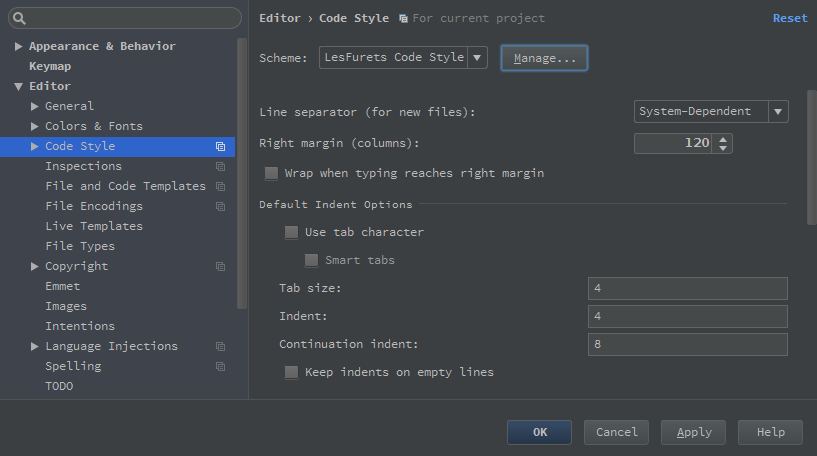
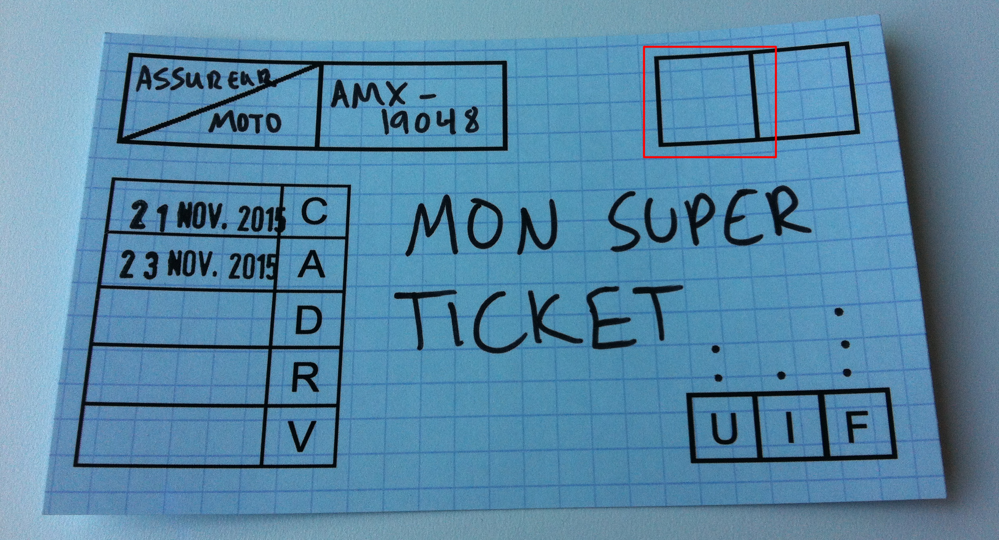

Code review
Alexandre DuBreuil
Mathieu Bolla
Alexandre DuBreuil
Tech lead équipe panel assureur
Mathieu Bolla
Développeur backend équipe panel assureur
LesFurets.com
1er site indépendant de comparaison d’assurance, lancé en Septembre 2012
Un lieu unique pour comparer rapidement des centaines d’offres
(assurances auto, moto, MRH, santé et emprunteur)
Organisation
L'équipe de développement est séparée en 4 streams
ou feature teams, avec 20+ développeurs
Les différents streams sont responsables de la
qualité de leur code... nous n'avons pas de QA
La qualité est la responsabilité des développeurs
On a une ceinture de tests unitaires, de tests d'integration et de selenium
Utilisation de programmation en paire et de code review systématique
Linus' law
"Given enough eyes, all bugs are shallow" -Linus Tolvalds
"A travers les yeux de plusieurs personnes, tout bug devient trivial"
Contenu
P ourquoi
Q ui
Q uoi
C omment
E viter
POURQUOI Notre définition du pourquoi : "Nous cherchons à construire une équipe qui discute sur la qualité, à créer une culture d'artisans du code (software craftsmanship)."
Construction d'une équipe Partage de connaissance
Apprentissage de nouvelles méthodes
Démarre la conversation sur le code
Moyen de prendre du recul
POURQUOI
Partage de connaissance : à la fois en explication et en compréhension
Apprentissage : apprendre de nouvelles fonctionnalités d'un langage, d'une API, de nouvelles manières de tester, de nouveau algorithmes, etc.
Conversation : souvent obligé de discuter sur les retours, permet de se mettre d'accord et de voir les opinions communes et les opinions divergeantes
Recul : bon moment pour prendre du recul, au delà de la programmation en binome
Documentation (implicite ou explicite) Forme de documentation commune
Identification des "code smells"
Base d'argumentaire (style guide)
POURQUOI
Documentation commune : documente des choix ("je pense que tu devrais renommer cette méthode", "non parce que..."), des code smell (en les explicitant et en les listant), etc.
Code smell : certaines structures problématiques dans le code qui pourraient indiquer un problème plus important
Code smell (voir plus tard) : source de dette technique si non traité
Style guide : rédaction explicite d'un style guide commun qui est base pour l'argumentation, et qui permet d'éviter les conversations interminables sur des détails (placement des espaces, utilisation des accolades)
Style guide : ces choix sont importants (voir plus tard), mais il n'est pas nécessaire d'en discuter a chaque review
Code style Idéalement automatique : Intellij Save Action Plugin

POURQUOI
Code style : devrait être un non-sujet, la meilleure manière de s'en assurer est que ce soit automatique
Guide style : plus général, est un but en soit parce qu'il uniformise les développements, les manières de faires, etc.
Qualité Auto code review
Intentions explicites
Donner un sens aux métriques
POURQUOI
Auto code review : plus a même d'écrire du bon code si on sait qu'il sera relu
Intentions explicites : si le développeur doit expliquer le code au relecteur, c'est souvent parce qu'il n'est pas suffisament explicite
Métriques : les métriques qualités sont souvent peu utilisées, mais servent de bonne base pour démarrer une code review (nombre de tests / couverture de tests / complexité)
QUI Notre définition du qui : "Pour bâtir une connaissance commune, toute affectation de relecteur est pertinente. Toutefois, pour trouver des erreurs, certains relecteurs sont plus pertinants que d'autres."
Nos développeurs vedettes Hervé Le champion
François Le vieux de la vieille
Oleg Fraichement sorti de l'oeuf
QUI
Hervé : Expert technique, praticien artiste, mais parfois loin du fonctionnel, et un peu trop confiant
François : Expert métier, connais toutes les ficelles du métier, mais codeur à l'ancienne, parfois un peu rude
Oleg : Le junior, rempli d'envie d'apprendre, mais n'a pas encore les reflexes, parfois un peu hésitant
Le combo gagnant
Relis/Code Hervé le champion François l'ancien Oleg le nouveau Hervé le champion François l'ancien Oleg le nouveau
QUI
Quelles sont les paires gagnantes?
En tant que relecteur, Hervé offre son expertise technique, et recois du fonctionnel et de la simplicité
En tant que relecteur, Francois offre son oeil métier, et recois de l'expertise technique et de la simplicité
En tant que relecteur, Oleg impose la clareté technique et fonctionnelle, et recois de l'expérience technique et fonctionnelle
Qualité Code métier (règles fonctionnelles, points d'extension...)
Code technique (sécurité, performance...)
Architecture
QUI
Des relecteurs expérimentés fonctionnellement pour les morceaux de code à valeur business ajoutée
Des relecteurs expérimentés techniquement pour des morceaux à valeur architecturale ajoutée
Des débutants pour relire un peu tout et être garants de la simplicité de lecture, facilité d'accès
Paires Paire "expérimenté / débutant"
Paire "développeur fonctionnel / procédural"
Les paires apportent des bénéfices différents
Garder le "coaching" à l'esprit
QUI
Une paire "expérimenté / débutant" pour former, éduquer
Une paire "dev fonctionnel / dev procédural" pour former, éduquer, l'un ou l'autre ou les deux
Toutes les paires sont intéressantes dans leur contexte, et apportent des éléments différents
Coaching : on cherche a créer une équipe d'artisans du code, on veut faire monter le niveau de tout le monde
Règles du jeu obligatoires Les relecteurs n'ont pas travaillé sur le code
Relecteurs sélectionnés selon la méthodologie de travail
QUI
Affectation du relecteur : pas travaillés sur le code de près ou de loin, et n'ont pas été copilotes (s'il y a développement en binôme)
Sélection du relecteur : les relecteurs sont sélectionnés selon la méthodologie de travail (en Agile lors du planning en début de sprint, en Kanban lorsque quelqu'un se libère, etc.)
A noter que ça peut rentrer en conflit avec certaines méthodologies, par exemple en kanban ce ne sera pas toujours la prochaine personne de libre, si par exemple cette personne a été en binome avec le développeur
Règles du jeu optionnelles Relecteur désigné par le développeur
Relecteur externe à l'équipe
QUI
Désigné par le développeur : s'il est expert d'un sujet, si c'est un bout de code a mi-chemin entre 2 équipes, etc.
Externe a l'équipe : mêmes raions
S'il y a relecteur désigné, il doit y avoir un relecteur choisi "normalement" aussi
QUOI Notre définition du quoi : "Chaque ligne de code incomprise est une ligne de code ajoutant de la dette technique."
Tests unitaires Tests unitaires nécessaires
Donne le domaine métier du code
Permet de vérifier la couverture
Nouvelles lignes et lignes modifiées
QUOI
Tests unitaires : nécessaires (sauf cas de non testabilité), ils donnent la compréhension nécessaire pour le relecteur qui ne connais pas le code avant d'avoir commencé
Domaine métier : permet au relecteur de savoir rapidement s'il manque des cas d'usage (et en suggérer de nouveaux) et si le domaine métier est respecté
La revue de code ne trouve pas les mêmes problèmes que les tests unitaires (et inversement), tout comme la revue de code ne sert pas les mêmes intérêts que la programmation en binome
Couverture : se baser sur les métriques de couverture, pour le nouveau code et pour le code modifié
Lignes modifiées : permet parfois d'ajouter des tests sur du code legacy, parfois c'est impossible, mais la démarche augmente la qualité du code légacy
Compréhension Relire toutes les lignes ajoutés ou modifiées
Explications sur les lignes incompréhensibles
Refactoring et retours basés sur les incompréhensions
QUOI
Toutes les lignes : pour accentuer le trait, chaque charactère, dans la mesure du possible
Explication : toute ligne incomprehensible ou difficile a comprendre, c'est de la dette technique qu'on laisse passer, demander au developpeur d'expliquer les parties difficiles a comprendre (discussion autour du code)
Refactoring : ensuite refactorer ces lignes en fonction des échanges
Anti-patterns et code smells Faciles à lister et repérer
Automatisation (partielle) possible
Cachent des problèmes plus graves
QUOI
Lister : facile ensuite s'entraîner a les détecter rapidement, et permet de les documenter
Automatisation : certains sont détectables par analyse statique (via checkstyle, pmd, findbugs, etc.)
Possible de définir des code smell spécifique a votre équipe ou a votre application
Exemples de code smells Code dupliqué
God object
Trop de paramètres
...
QUOI
Facile de s'entraîner a les détecter rapidement
Possible de définir des code smell spécifique a votre équipe ou a votre application
Code dupliqué : peut cacher des problèmes de design ou la réutilisation de code est difficile voir impossible
God object : un objet devenu trop gros, qui contient beaucoup de responsabilité, ou qui contrôle beaucoup d'autres objets
Trop de paramètres : cache une méthode qui a trop de responsabilités
Quizz : cherchez l'erreur if ((err = ReadyHash(&SSLHashSHA1, &hashCtx)) != 0) {
goto fail;
}
if ((err = SSLHashSHA1.update(&hashCtx, &clientRandom)) != 0) {
goto fail;
}
if ((err = SSLHashSHA1.update(&hashCtx, &serverRandom)) != 0) {
goto fail;
}
if ((err = SSLHashSHA1.update(&hashCtx, &signedParams)) != 0) {
goto fail;
}
goto fail;
if ((err = SSLHashSHA1.final(&hashCtx, &hashOut)) != 0) {
goto fail;
}
Apple's "goto fail" bug : CVE-2014-1266
QUOI
Importance du style guide : pour le relecteur (pour ne pas s'en soucier) et pour le développeur (pour palier aux lacunes du langage)
Bug introduit avec iOS 7.0 et OS X Mavericks en 2012 sur les iPhones, iPads, AppleTVs
Fixé en février 2014 (17 mois plus tard)
Permettait une attaque du type "man-in-the-middle"
COMMENT Notre définition du comment : "Commencer à faire de la code review avec un crime partner . Étendre graduellement aux intéressés."
Comment procéder ?
"Be the change you want to see" -Gandhi le relecteur de code
La recette de Gandhi 1. Trouver un "partenaire de crime"
2. Faire une première revue de code
3. Discuter et valider les hypothèses
4. Étendre (prendre son temps)
COMMENT
Partenaire de crime : pas besoin d'être d'accord avec lui sur quoi que ce soit (même pertinant si vous êtes jamais d'accord), il faut seulement que les 2 aient envie de faire de la revue de code
Discuter : discuter de la meilleure manière de procéder pour faire de la code review, valider les hypothèses sur les outils, le style guide, etc.
Étendre : étendre au reste de l'équipe avec les intéressés, les autres suivront (ne pas négliger l'aspect de l'intéressement de groupe)
Prendre son temps : se rappeler que le but est de créer des artisants du code, donc de discuter avec les gens, et ça prendre du temps pour monter une culture
Outils Prenez ce qui marche pour vous
Commencez le plus à poil possible
Un bout de papier suffit (presque...)
... mais il faut pouvoir documenter les discussions
COMMENT
Commencer a poil : le but c'est de se poser les vraies questions dès le début (voir le plan de cette présentation) et d'éviter la dérive ("cool le bouton +1 dans gerrit, mais qu'est-ce que je dois relire comme code ?")
Papier : ce serait suffisant si c'était historisable, un bon point de départ équivalent est JIRA ou votre bug tracker
Mise en place chez LesFurets.com Sur le tableau / dans JIRA : case à cocher
Condition nécessaire pour la mise en production

COMMENT
Ajout d'une case a cocher dans JIRA et dans sur le tableau kanban : la code review devient obligatoire
Le ticket JIRA (qui correspond a une branche git) ne peut pas partir tant qu'il n'a pas passé la validation fonctionnelle et la validation technique (code review)
On trace les retours directement dans le ticket JIRA
... pour les pro GitHub : puissant, la référence
GitLab : si GitHub n'est pas une option
Gerrit : pour un but très précis, très contraignant
...
COMMENT
Github : probablement le plus simple a mettre en place, ils ont popularisé le concept de "pull request" qui correspond plus ou moins a l'étape code review
Gitlab : si github n'est pas possible (prix, self-hosted), solution open source qui clone les fonctionnalités de github
Gerrit : permet de "+1" des groupements de commit, et tant que ça ne dépasse pas un seuil, le groupement de commit ne passe pas
Autres : JIRA, Sonar, Word, annotation Java, Javadoc, IDE tags...
EVITER Notre définition de ce qu'il ne faut pas faire : "Oublier l'objectif de partage de connaissance."
La honte Pas d'humiliation publique
Pas de réunion de code
Pas de culture orale
Pas de sur-relecture
Ne pas faire de "shame parade" (prendre un dev malheureux, et montrer son bout de code fautif dans une salle devant tout le monde. ceci n'est pas de la code review, et ce n'est pas bon)
Ne pas faire de "code réunion" (genre prendre un maximum de gens et passer un maximum de temps a regarder un petit bout de code parce qu'il est critique. s'il est si critique, alors il est petit et testable)
Ne pas faire de code review a l'oral, mais prendre des notes, expliquer pourquoi ca nous questionne, pourquoi on n'est pas d'accord, ne serais-ce que pour avoir une référence au moment de corriger, ou de laisser tomber
Ne pas passer trop de temps a le faire, ni passer des revues sur des revues qui ne terminent plus, c'est deja assez chronophage : rester pragmatique
BONUS Qu'est-ce que la code review résout parfois ?
Code legacy N'améliore que les parties modifiées
On relit les parties du code modifiés ou ajoutés, donc a moins de modifier beaucoup de code legacy, le relecteur ne relira jamais ces lignes
On ne discute donc jamais de ces lignes de code
Architecture Entraîne parfois des discussions sur l'architecture si les développeurs prennent suffisament de recul
Même si la relecture de code c'est un moment pour prendre du recul et réfléchir au nouveau code, on discute rarement du système au global
Ne remplace pas le pair programming Ne répond pas à la même problématique
N'a pas les mêmes bénéfices...
... même si c'est très semblable
Voir Pair programming chez LesFurets.com
Différences notables : la programmation en binôme n'est pas toujours systématique, la programmation en binôme a tendance a augmenter la vélocité (instantanée), pas la relecture de code
Similarités notables : permet de créer une culture d'artisans du code, permet de discuter sur le code, augmente la qualité générale
"Quand on se lance dans la revue de code"
 FrançoisLe vieux de la vieille
FrançoisLe vieux de la vieille